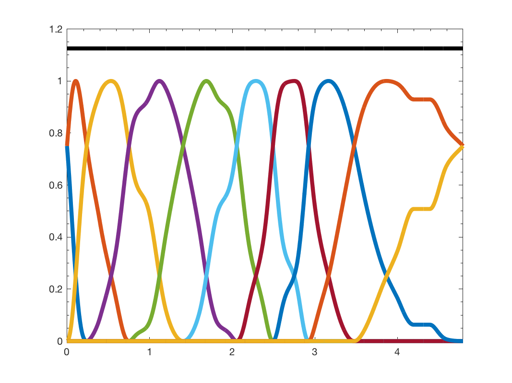

g = gsp_design_warped_translates( G, Nf ); g = gsp_design_warped_translates( G, Nf, param );
This function designs filters that are warped versions of the uniform half cosine translates described above.
This function will compute the maximum eigenvalue of the laplacian. To be more efficient, you can precompute it using:
G = gsp_estimate_lmax(G);
Example:
figure(); Nf = 10; G = gsp_sensor(100); G = gsp_estimate_lmax(G); G = gsp_spectrum_cdf_approx(G); g = gsp_design_warped_translates(G, Nf); gsp_plot_filter(G,g); [A,B] = gsp_filterbank_bounds(G,g)
This code produces the following output:
A =
1.1250
B =
1.1250

param is an optional structure containing the following fields
param.verbose: verbosity level. 0 no log - 1 display warnings. (default 1)
param.warping_type: Create a warping function according two different methods (default 'spectrum_approximation'). Please read below for more information about this parameter.
param.log: On top of the other warping add a log function. An alternative way to construct spectral graph wavelets. These are adapted to the specific spectrum, not just the length of the spectrum. The final warping function will be:
where the function \(f(x)\) is defined by the attribute param.warping_type. Warning: Additional required inputs: param.warp_function.
param.warp_function: To provide a special warping function. This parameter is used when param.warping_type is 'custom'.
param.interpolation_type: select the interpolation type for the spectrum samples. You can choose 'pwl' (piece wise linear) or 'monocubic'. This attribute is used only when param.warping_type is 'spectrum_interpolation'. (default 'monocubic')
param.filter: select the initial uniform filterbank 'half_cosine' or 'itersine'. See gsp_design_half_cosine and gsp_design_itersine for more information about those filterbank. If you want to use your personal filter, just put it there. For instance:
param.filter = gsp_design_abspline(G,Nf);
(Default 'half_cosine')
param.overlap: overlap of the initial filter. Works only with param.filter set to 'itersine'. For tight frame, input an even number (default 2).
The different warping type available in param.warping_type are:
'spectrum_interpolation': Warping functions based on spectrum samples. From the samples, an approximation of the spectrum cdf is obtained by interpolation. Then this function is used for the warping. (i.e., like the filter banks [1] in Section 2, these are spectrum-adapted filter banks).
If you use this method you need to specify the input param.approx_spectrum that contains two fields: param.approx_spectrum.x and param.approx_spectrum.y that are the the point of the cumulative density distribution.
'spectrum_approximation': This function will compute an approximation of the cumulative density function of the graph Laplacian eigenvalues and use it as warping function. If you want to use the cdf later, you should precompute it using:
G = gsp_spectrum_cdf_approx(G);
'custom': The user provide the warping function in the parameter: param.warp_function.
D. I. Shuman, C. Wiesmeyr, N. Holighaus, and P. Vandergheynst. Spectrum-adapted tight graph wavelet and vertex-frequency frames. arXiv preprint arXiv:1311.0897, 2013.